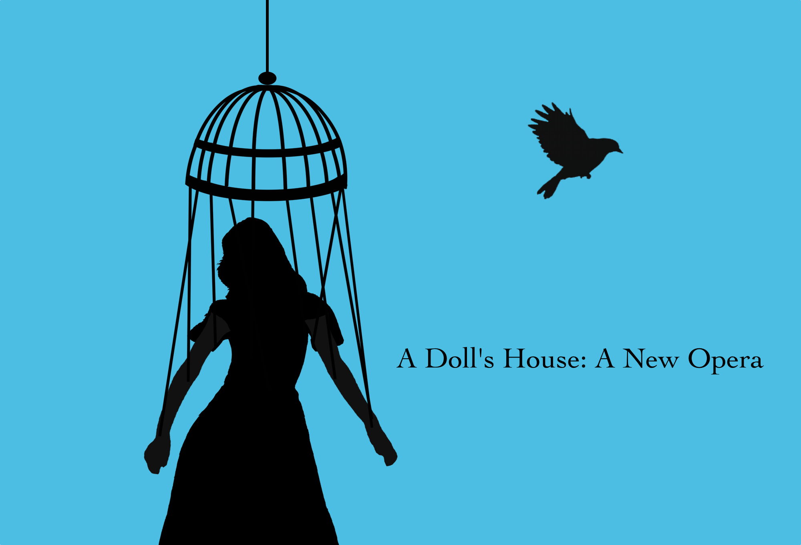
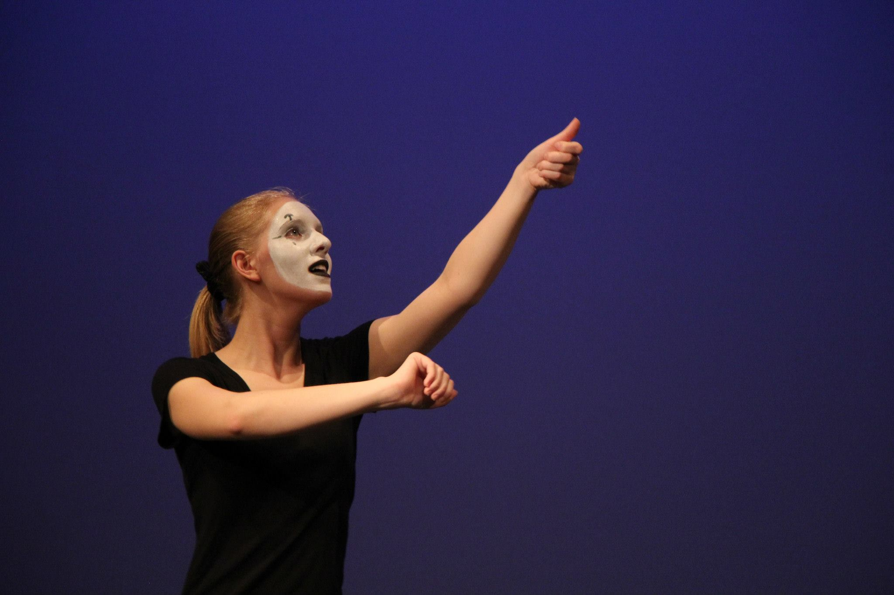
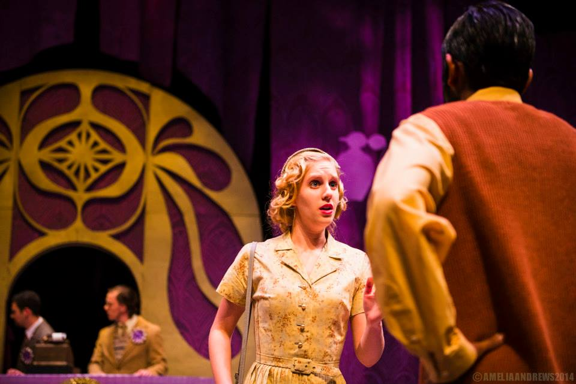

Bookstore Manager
Meet Murasaki Shikibu
2016

Grace Oberhofer is a Tacoma, WA native and a Tufts University graduate (B.A. Music, minor in Italian studies, summa cum laude) who currently lives in Brooklyn, where she works as a composer, performer, sound designer, and music director.
Growing up in Tacoma, Grace was able to take advantage of any and all creative avenues. She was lucky enough to attend the Tacoma School of the Arts for high school, where she had a split concentration in vocal performance and songwriting/audio recording. Her love of composition stemmed from her work at TSOTA, and she continued to pursue both performance and composition throughout her college education. While at Tufts, Grace took advantage of every artistic opportunity possible, collaborating as a performer, composer, sound designer and writer with the Tufts Department of Drama and Dance, the Tufts Opera Ensemble, Pen, Paint & Pretzels, Bare Bodkin Theatre Co., Torn Ticket II, and Hype! Mime Troupe, among others. She was also able to participate in the Tufts Summer Scholars program thanks to the generous support of the Schwartz-Paddock Family Fellowship. During her junior year, she won the Tishler Award for her performance in classical voice, and in her senior year she received the Mabel Daniels Prize in Music and Literature for her thesis, the first iteration of A Doll’s House: A New Opera.
Since moving to Brooklyn, Grace has worked in assistant music direction with the Adirondack Theater Festival, administrative assistance with PROTOTYPE festival at HERE Arts, and sound design with Gloucester Stage Company, Two-By-For Productions, and Tufts University. She has performed throughout the city with theater-makers such as The Tank, HB Studios, Spicy Witch Productions and the New York Fringe Festival. Current compositional projects include a choral play, ICONS/IDOLS, recently presented at the 2016 New Ohio Ice Factory Festival, Caroline Angell’s After I Was Free, recently previewed at Dixon's Place in NYC, and a A Doll’s House: A New Opera, recently showcased in concert at Central Square Theater in Boston. Grace is also a current member of the BMI Musical Theater Workshop.
Most recently, Grace received the Opera America Discovery Grant 2017 to further develop ICONS/IDOLS with her collaborator, librettist/playwright Helen Banner. Each choral play in the trilogy, ICONS/IDOLS: Irene, ICONS/IDOLS: The Eunuchs, and ICONS/IDOLS: The Wildness of Sin, will be presented as a developmental reading throughout the 2017-2018 grant cycle.



Bookstore Manager
Meet Murasaki Shikibu
2016
Meet Murasaki Shikibu
2016
Amy
Bonesetter
2016
Bonesetter
2016
The Witch
Into The Woods
2015
Into The Woods
2015

Mime
Hype Mime Troupe
2015
Hype Mime Troupe
2015

Amalia
She Loves Me
2014
She Loves Me
2014
Amalia
She Loves Me
2014
She Loves Me
2014
Amalia
She Loves Me
2014
She Loves Me
2014

Sally Brown
Charlie Brown
2014
Charlie Brown
2014
Mime
Hype Mime Troupe
2013
Hype Mime Troupe
2013
Logainne
The 25th Annual
2013
The 25th Annual
2013
Juliet
Romeo And Juliet
2012
Romeo And Juliet
2012
Dora
Our Class
2012
Our Class
2012
in the news
Mar 2017
Opera America
Spring 2017 Women of the Year
Feb 2017
Broadway World
WEBroadway to Celebrate Female Songwriters with ‘NOTEWORTHY’ at the D-Lounge
Dec 2016
Refinery29
Undercover Latinas | So sketch (featured extra)
Nov 2016
THINX
The Official ~THINX 2016 Holiday Gift Guide~, featuring Bitch Carols (featured vocalist)
Oct 2016
Video Interview with Morgan Burch
Grace Oberhofer; song and interview
Sep 2016
New Georges
Silver Belles: Celebrate 25 Highly Theatrical Years. Artists Announced! (featured composer)
Everyday Inferno Theatre Company
After I Was Free Interview: Grace Oberhofer
Aug 2016
Broadway World
Rachel Christiansen and The Brewing Dept. Present MEET MURASAKI SHIKIBU FOLLOWED BY BOOK SIGNING, AND OTHER THINGS
Jun 2016
New York Theater Review
Ryan Hudak interviews Helen Banner, Grace Oberhofer and Colette Robert on ICONS/IDOLS, as presented by the New Ohio as parts of Ice Factory 2016
Playbill
The Ice Factory Festival Kicks Off Today: The Obie-winning event returns to the New Ohio Theatre Off-Broadway